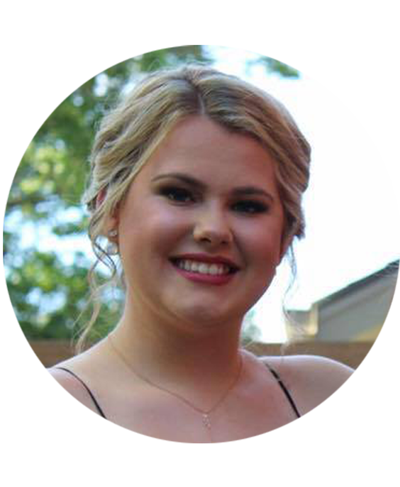

Victoria & Renata

Meet Our Team
Renata Cunha
Victoria Collier
Renata Cunha
"Professional Journalist with large experience in advertising company and agency interface, customer services and client relationship. She worked as Marketing and Communication Coordinator, Press Agent and Journalist in Brazilian companies, in Minas Gerais and São Paulo.
Renata is dedicated and persistent professional who strives to excel in each and every project she has worked with.
Currently looking forward to improving knowledge in every aspect of Digital Communication through a Diploma Program at Fanshawe College and being able to apply it in a new career opportunity."
Victoria Collier
"From a young age, Victoria has always loved design, and has used her capabilities in competitions, school and career. In 2015, Victoria made her debute in the Ontario Skills competition. She placed first in the municipal and regionals, making it to provincials. This sparked Victoria to continue her work in this field.
Although she is still young, she is dedicated to what she does and strives to achieve the greatest level of excellence.
Victoria is currently working towards recieving her diploma in Interactive Media Design at Fanshawe College."